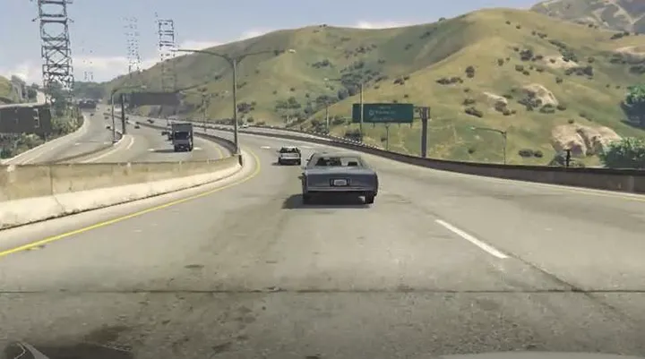
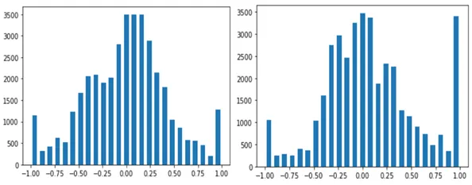
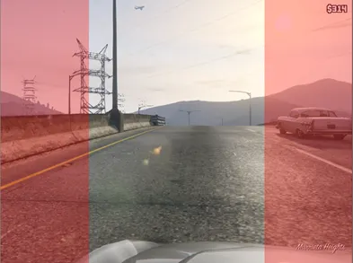

Building a Self-Driving Vehicle in GTA-V Using Deep Learning and a Convolutional Neural Network
Summary
A self-driving vehicle built inside the video game GTA-V, using behaviour cloning with NVIDIA's PilotNet to predict steering and throttle from the hood camera, and a YOLOv3-Tiny object detector to slow or brake for vehicles and pedestrians ahead. Each network was trained on Google Colab with Keras.

Goal
The goal is to navigate highway and city-like environments with different traffic densities, using a self-generated dataset and an object detector for both lateral (steering) and longitudinal (throttle and braking) control. A game gives high-quality graphics, different weather and traffic conditions, and unexpected behaviour from nearby vehicles, without any hardware or risk.
Dataset
- Generation: driving from the first-person hood camera with an Xbox controller for a few hours, recording grayscale 160×120 frames with steering (−1 to 1) and throttle (−1 to 1). The result is 100,000 labelled images.
- Balancing: most data lies near steering angle 0 because the car mostly drives straight, which would bias the network. Bins were capped at 4,000 samples, leaving 39,046 images.
- Augmentation: flipping each image horizontally and negating its steering angle doubled the set to 78,092 images. Random shifts, brightness and zoom were applied during training.


Model and training
Three networks were compared (PilotNet, ResNet-50 and VGG-19), and PilotNet was chosen for its fast predictions. It has 5 convolutional layers, 3 fully connected layers and a normalisation layer, and a second output neuron was added so it predicts both steering angle and throttle. It is trained as a regression problem with the Adam optimiser on mean squared error, at a learning rate of 0.001, using 62,474 images for training and 15,618 for validation.
At run time a Python script takes a screenshot of the game, pre-processes it, runs the network and sends the predicted steering and throttle to a virtual Xbox controller (vJoy).
Adding object detection (YOLOv3)
Behaviour cloning alone drove fairly well but often collided with other vehicles without braking. A pretrained YOLOv3-Tiny, restricted to cars, trucks, people, motorcycles, buses, trains and stop signs, was added. The distance to a detected object is estimated from the size of its bounding box: if it is too close, the throttle is set to −1, the steering to 0 and the brake is applied; if it is nearby, the throttle is reduced a lot; if it is far, a little.
The first version stopped whenever any vehicle was detected, including cars in other lanes and parked cars. Running the detector only on a central region of interest of the frame fixed this.


Results and future work
The integrated system showed that a self-driving car can be built and simulated with computer vision and deep learning, though more research is needed before it would be realistic for an actual car.
- Higher-resolution images and a more diverse dataset (most data came from highway driving).
- CNN plus LSTM, so predictions depend on previous outputs and the car can tell a parked vehicle from a moving one.